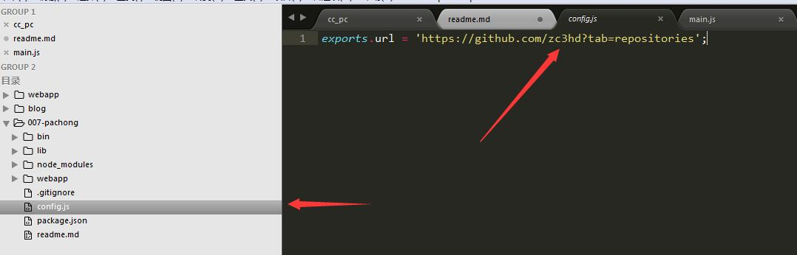
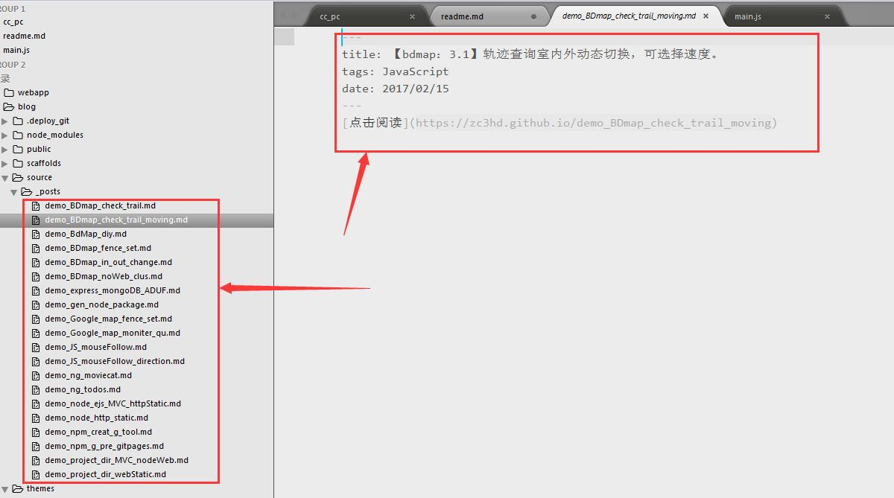

1.运行下载
- git clone 本存储地址
- npm install
- 全局命令 cc-pac -i ./(相对路径或绝对路径)
2.特别注意
- 命令行输入绝对路径分隔符要注意为双反斜杠 \
3.需三方包
- bluebird：promise的利器
- fs-extra：这里其实没有用这个包的拓展API，用习惯了就把这个也用上了。
- cheerio：读取到文件内容包装为一个大DOM，进行各种DOM的类JQ操作
4.爬虫思路
4.1读取文件
- 路径那个地方提供两个参数，相对路径和绝对路径，为了加快文件的生成，也为了避免重复生成文件
- 首先读取指定路径下的文件信息，把读取到的信息挂载到全局变量上。
function fetchPage(argv_path) {
this.path = argv_path;
//设置全局变量
this.dir_files = [];
}
---------------------------------------------------
init: function() {
var me = this;
me.read_dir()
.then(function(arr) {
//挂载到全局变量上
me.dir_files = arr;
console.log(arr);
me.get_gitpages()
})
},
4.2读取github仓储
- 代码实现：
get_gitpages: function() {
/* body... */
var me = this;
return new Promise(function(resolve, reject) {
http.get(config.url, function(res) {
var html = ''; //用来存储请求网页的整个html内容
res.setEncoding('utf-8'); //防止中文乱码
res.on('data', function(chunk) {
html += chunk;
});
res.on('end', function() {
var $ = cheerio.load(html); //采用cheerio模块解析html
var urls = $('div.js-repo-list>li');
console.log('github库存信息读取成功--')
var falg = null;
for (var i = 0; i < urls.length; i++) {
// 文件名
var name = $(urls[i]).find('div.d-inline-block a').text().trim();
// 信息
var title = $(urls[i]).find('p.d-inline-block').text().trim();
var tags = $(urls[i]).find('div.text-gray span.mr-3').text().trim();
var time = $(urls[i]).find('div.text-gray relative-time').attr('datetime');
time = me.handle_time(time);
var info = '---' + '\n' +
'title: ' + title + '\n' +
'tags: ' + tags + '\n' +
'date: ' + time + '\n' +
'---' + '\n' +
'[点击阅读](https://zc3hd.github.io/' + name + ')';
// 前面是demo的才进行处理
if (name.substr(0, 4) == 'demo') {
falg = me.dir_files.indexOf(name+'.md');
me.indexOfDir(falg, { name: name, info: info });
}
}
});
}).on('error', function(err) {
reject(err);
});
});
},
- 可以看到上面这个请求我用promise进行了包装。但是判断是否存在文件，和生成新的文件都在变量的里面执行了。这里我是遇到了坑。简单讲就是闭包。

- 本来我是要把收集到name(文件名)，info(文件内容)在循环的时候组成一个对象，推到一个数组中，我上面的获取指定路径下的文件信息也是promise包装的。我原来想着是用promise.all()方法收集两个异步回来的数据。这里有坑。收集数据和文件信息都没有问题。但是收集到仓储的数据就是最后一组数据多次重复。我开始以为是组对象的组装错误，后来发现是闭包的原因。因为我在循环遍历的时候，urls[i]的是一个对象，当遍历完成后，i成为length-1,所有的对象指向都是最后一个对象的数据。故resolve（组装好的数组），这个数组就全部是最后一组数据组成的大数组。
- 所以我需要在闭包内部就判断有没有在当前文件下就存在这个文件，及形成新的文件。而且生成文件这里是同步生成。

5.其他说明
- 包没有注册，但并不妨碍你使用。
- 这里有个配置文件，可以直接当别人写的所有的仓储，但是不能保证可以使用。需要自己改我的源码

- 为什么我的可以使用？因为我本地项目基本都有gh-pages的展示分支，而我的博客里面.md文件都是一个标题夹一个连接内容，其实这样自己感觉也对。我可以分开管理每个项目，又简单集成到博客上，然后每个项目的展示页都可以回到主页。所以这也就是我昨天写的那个自动生成gh-pages项目的全局的包的目的。
- 爬虫生成的目录和我博客里要的内容
